1918년, 초소형 항공모함과 제펠린 이야기
게시: 2023-06-01T06:30:02+09:00
덴마크 서해안과 독일 북해안이 이루는 만이 그 가운데 있는 작은 섬의 이름을 따서 Heligoland Bight라고 부름. 이 헬리골란트 만은 1914년 벌어진 해전 이후 영국 해군이 들어갈 수 없을 정도로 철저히 독일군이 장악한 바다. 바다엔 독일 해군 함정들도 있지만 독일 해군이 기뢰를 잔뜩 깔아 놓았기 때문. 그래도 이 일대에 기지를 둔 독일 해군 잠수함과 제펠린 비행선이 뭘 하고 있는지 정찰은 해야 하는데, 영국 해군 수상함정으로는 접근이 안 되니 항공기로라도 접근을 해야 함. 그러나 당시 항공기들은 그렇게 항속 거리가 길지 않아, 영국에서 이륙해서는 거기까지 왕복이 안 됨.
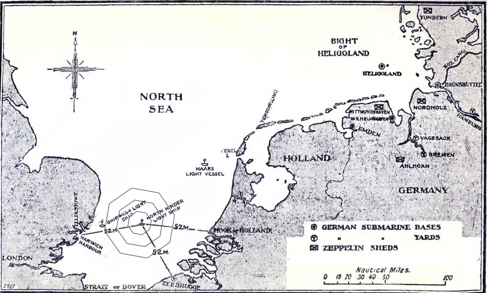
(지도 오른쪽 윗부분에 보이는 섬이 Heligoland이고 그를 둘러싼 막힌 바다가 Bight of Heligoland.)
그러던 중 1916년 수상비행기 부대의 John Cyril Porte 대령이 신박한 아이디어를 냄. 공기 튜브를 달아서 물에 잠겼다 떴다 할 수 있도록 만든 작은 바지선(barge, lighter라고도 함)을 만들어 거기에 수상비행기를 얹고, 그 바지선을 다른 배가 끌고 가서 헬리골란트 인근 해상에서 물에 잠기도록 한 뒤, 수상기를 이륙시키자는 것.
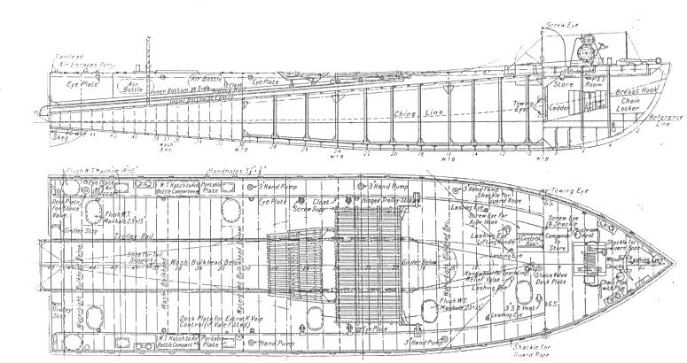
(수상비행기를 실어나르기 위해 특수 제작된 바지선인 lighter의 구조)
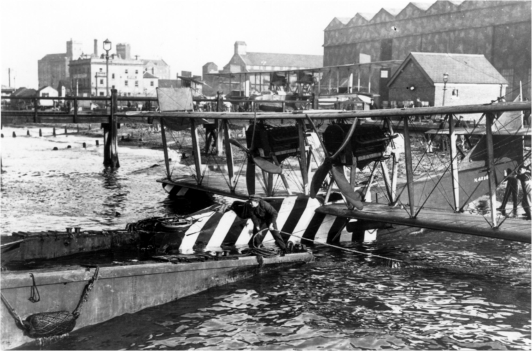
(Lighter 뒤쪽에 달린 공기 튜브에 바람을 빼면 배의 뒤쪽이 물에 잠겨 거기로 수상비행기를 싣거나 내릴 수 있게 됨.)
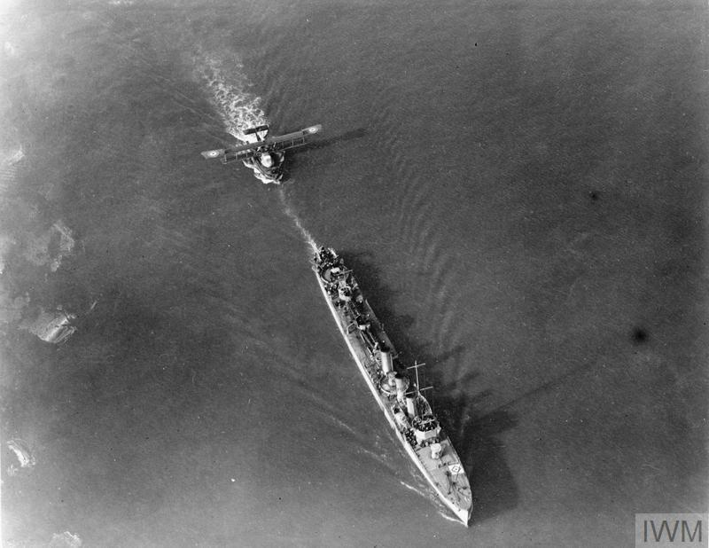
(구축함이 끌고 있는 lighter와 그 위에 얹힌 Felixstowe 수상비행기 대대 소속 F2A 수상비행기.)
실제로 실험을 거친 뒤, 1918년 3월 F2A 수상기 3대를 이런 식으로 끌고 가서 네덜란드 해안가에서 날림. 이들은 훌륭하게 정찰 임무를 수행한 뒤 영국 동해안의 Felixstowe 수상기 기지로 320km를 날아 귀환하는데 성공. 아쉬운 점은 이 해역을 홈그라운드로 삼고 있는 육상 발진 독일 항공기들과 제펠린 비행선들을 상대하기에는 느려터진 수상기로는 역부족이라서 야도 찍고 오는 것에 만족해야 했다는 것.
이 작전이 성공하는 것을 본 영국 해군 조종사 Charles Rumney Samson 중령은 더욱 미친 아이디어를 냄. 아예 육상 발진용 주력 전투기인 Sopwith Camel을 저런 식으로 바다에서 이륙시키되, 마치 연 날리기처럼 날리자는 것. 최고 속력이 98노트(182 km/h)이던 카멜 전투기의 이륙 속도가 42노트(77 km/h)이고 당시 구축함이 최고 35노트이니, 맞바람을 받은 상태에서 그렇게 구축함이 30노트 이상의 속력으로 끌어주고 카멜도 엔진 출력을 최고로 하여 오르막 길을 달리면, 아주 짧은 활주만으로도 이함이 가능할 것이라는 것. 이를 위해 lighter라고 부르던 그 바지선에 짧은 스키 점프대처럼 약간 오르막 형식의 짧은 비행갑판을 얹음.
이 미친 아이디어를 준비를 거쳐 테스트 해보니... 이게 되네?
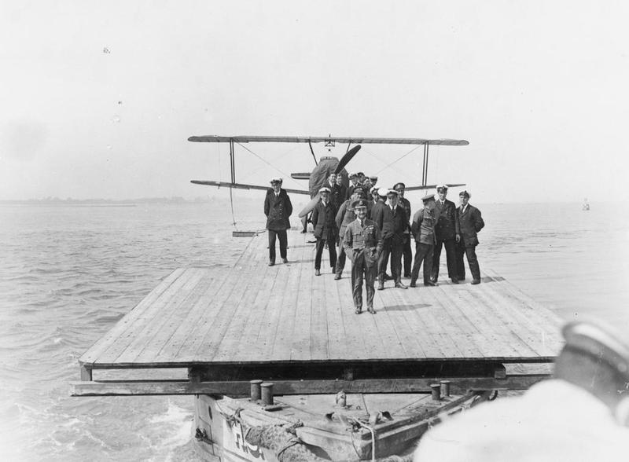
(맨 앞에 선 사람이 샘슨 중령.)
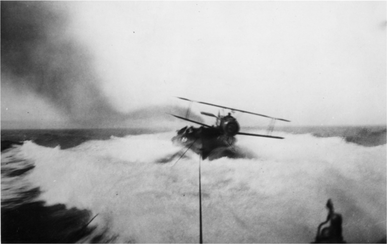 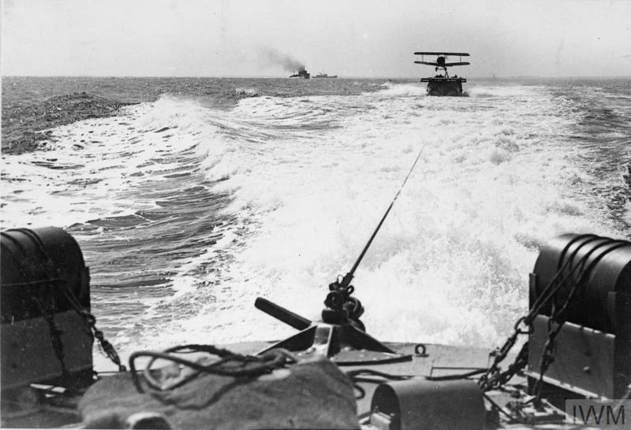 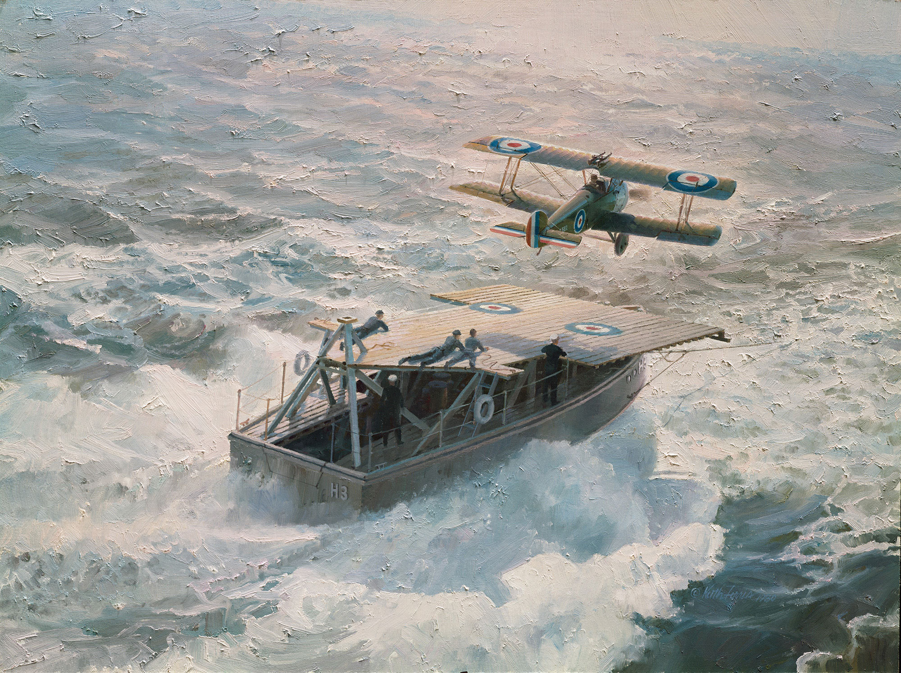
(당시 이 미친 테스트를 기록한 사진과 그림. 그러나 저렇게 스키 점프대 없이 평갑판으로 해놓고 테스트한 것은 모두 실패했다고.)
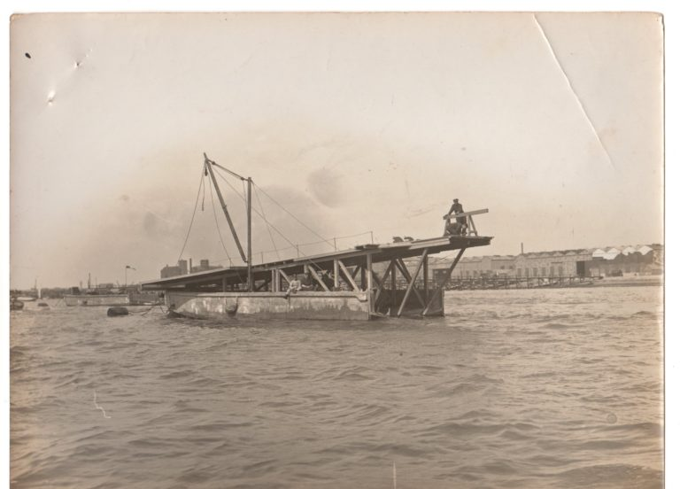
(이 초소형 항모의 아이디어가 처음부터 아무 실패 없이 구현된 것은 아님. 처음 테스트할 때는 저렇게 경사각을 낼 생각을 못하여, 실속 속력 이상의 속력으로 달렸지만 이함에 실패. 다행히 조종사는 구조됨. 그 이후 위로 경사각을 낸 스키 점프대 같은 짧은 비행갑판을 설치한 것이 성공의 비결.)
이렇게 준비된 역사상 최경량 항공모함과 함재기가 실전에 나선 것은 1918년 8월 11일. 헬리골란트 만에서 활동 중인 독일 소해정들을 파괴하기 위해 F2A 수상기들과 함께, 영국 공군 소속 캐나다인 Stuart D. Culley 대위가 조종하는 카멜 전투기를 실은 lighter가 출동한 것. 카멜 전투기를 실은 lighter는 최고 시속 35노트의 구축함 HMS Redoubt가 끌고 감.
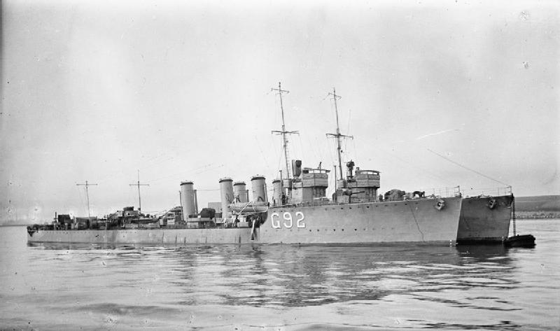
(HMS Redoubt과 같은 R-class 구축함인 HMS Rob Roy)
수상기들이 이륙하여 활동을 개시한 뒤 얼마 안 되어 헬리골란트 상공에 독일군 제펠린 L53 비행선이 목격됨. 이 제펠린의 무전을 받고 날렵한 독일 전투기들이 출동하자 다른 수상기들은 재빨리 달아났으나, 이들을 싣고 왔던 연안용 모터보트(Coastal Motor Boat, 우리가 생각하는 레저용 모터 보트보다는 훨씬 큰 선박임)들 중 절반은 독일 전투기들의 공격을 받고 침몰. 이때 카멜 전투기는 뭘 하고 있었을까?
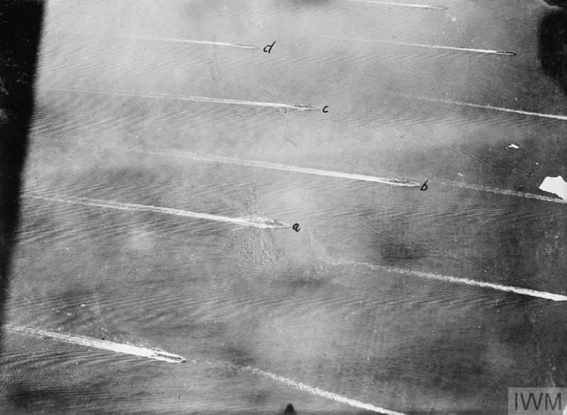
(1918년 8월 11일 작전에 투입되었던 영국 모터 보트들의 모습. 당일 독일 전투기들이 찍은 사진.)
수상기들이 이륙한 뒤에도 바다 위 초소형 항모 갑판 위에서 대기하던 컬리 대위의 카멜 전투기는 헬리골란트 상공에 독일군 제펠린 L53 비행선이 목격되자 즉각 출동. 구축함이 맞바람을 받으며 30노트로 끌어주고 카멜 엔진을 full로 돌리자, 정말 딱 1.5미터만 활주하고도 이함에 성공. 컬리의 카멜은 어차피 수적으로 역부족이던 독일 전투기들을 피해 멀리 빙 돌아 제펠린 비행선을 노림. 제펠린은 수상기들이 도망친 뒤 독일 전투기들이 영국 모터보트들을 때려부수는 것을 관찰하느라 컬리의 카멜을 전혀 보지 못함. 컬리는 거의 1시간에 가까운 시간 동안 빙빙 돌아 저 높이 떠있는 제펠린으로 접근.
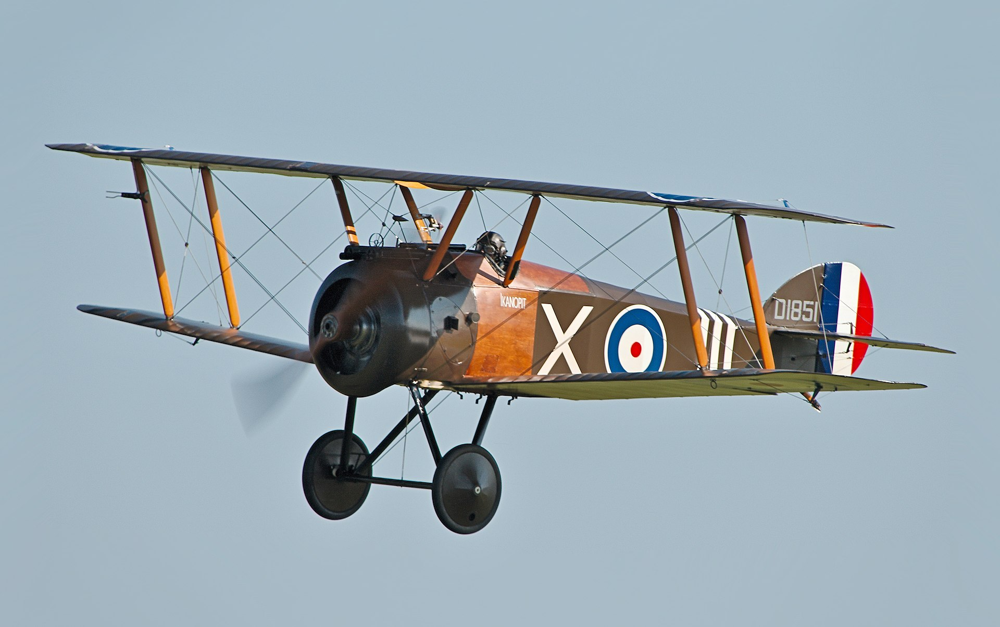
(당시 영국 항공대의 주력 전투기 Sopwith Camel)
그런데 문제는 고도. 최근 미국을 횡단한 중국 스파이 기구가 성층권 높이에 위치한 바람에 최신예 F-22조차 간신히 그 고도에 올라갈 수 있었던 것처럼, 당시 제펠린은 대략 6km 상공에 있었으나 Sopwith Camel의 최고 비행고도는 고작 5.8km. 컬리 대위는 카멜의 기수를 거의 수직으로 세워 제펠린을 향하게 한 뒤 Lewis 기관총의 방아쇠를 당김. 이하는 그냥 컬리 대위의 생생한 기록으로 대체. "곧 제펠린의 거대한 기체가 제 앞에 나타났습니다. 조종실과 엔진 곤돌라, 그리고 회전하는 프로펠러 등을 볼 수 있었어요. 하지만 승무원들은 하나도 보지 못했습니다. 제펠린이 제 위로 지나갈 때 저는 카멜의 기수를 거의 실속 위치(stalled position)까지 들어올리고는 기수에 달린 루이스 기관총 2정의 방아쇠를 당겼습니다. 한 정은 탄창 전체를 비울 때까지 연사가 되었지만, 다른 한 정은 한 5~6발 쏘고 나니까 탄막힘이 발생해버렸어요. (역주: 역시 영국제!) 그 비행선의 복부를 지나가면서 보니 뭔가 검은 물체가 떨어져 내리는 것이 힐끔 눈에 들어왔습니다. 나중에 야 알았지만 그게 L53 비행선의 유일한 생존자더라구요. 그 친구는 약 5.7km 상공에서 낙하산을 펼쳤는데 그게 아마 당시 최고도 낙하 기록이었을 거에요. 그 친구는 나중에 독일 군함에 구조되었습니다.
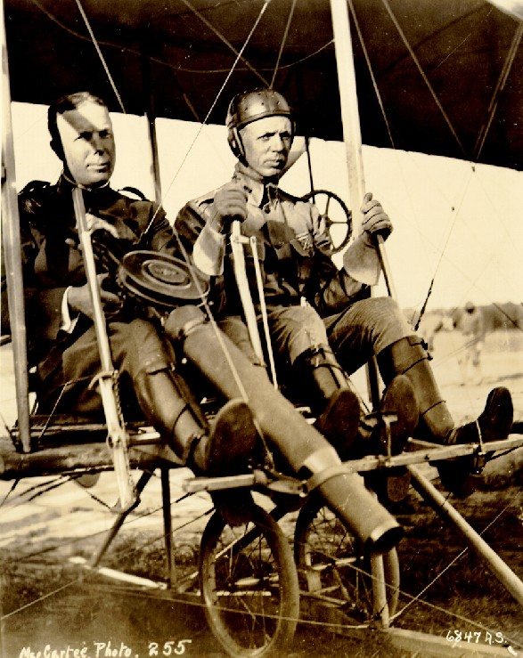
(1912년 영국군 최초로 항공기에 루이스 기관총을 시험 탑재한 모습)
제 기관총 탄창이 빌 즈음해서 (역주: 약 10초 당겼다는 이야기. 당시 루이스 기관총의 원형 탄창에는 97발이 들어갔고, 발사 속도는 초당 9발) 제 카멜은 실속하여 대략 600미터 정도를 완전히 통제불능 상태로 추락했습니다. 덕분에 전투기 조종이 가능한 상태가 될 때까지 기다리면서 비행선을 올려다볼 기회가 생겼지요. 처음에는 제 필사적 노력에도 불구하고 전혀 아무 영향을 받지 않고 그냥 멋진 모습으로 항행을 계속하는 것처럼 보였어요. 제가 다시 조종간과 계기판으로 시선을 돌리려는 순간 갑자기, 넓은 간격으로 비행선 기체 세 곳에서 마치 봉투 속에서 쏟아지는 것 같은 화염이 터져나왔습니다. 1분 안에 꼬리를 제외한 비행선 전체가 거대한 불길에 휩싸였습니다. 그러더니 마치 불길이 터져나올 때처럼 순식간에 불길이 꺼지고 거대한 금속 뼈대만 남더군요. 꼬리 부분에 아직도 깃발을 휘날리던 그 비행선 뼈대는 그냥 한 덩어리인 채 그대로 떨어졌습니다. 하지만 떨어질 때 보니 앞부분에서 1/3 정도 되는 지점의 등뼈 부분이 부러졌더군요. 비행선의 잔해는 아마 30명이 넘었을 승무원들과 함께 제 밑의 안개 구름 속으로 떨어졌습니다. 그때 시간이 오전 9시 41분, 제가 라이터(lighter)에서 이함한 지 1시간 정도 지난 뒤였습니다."
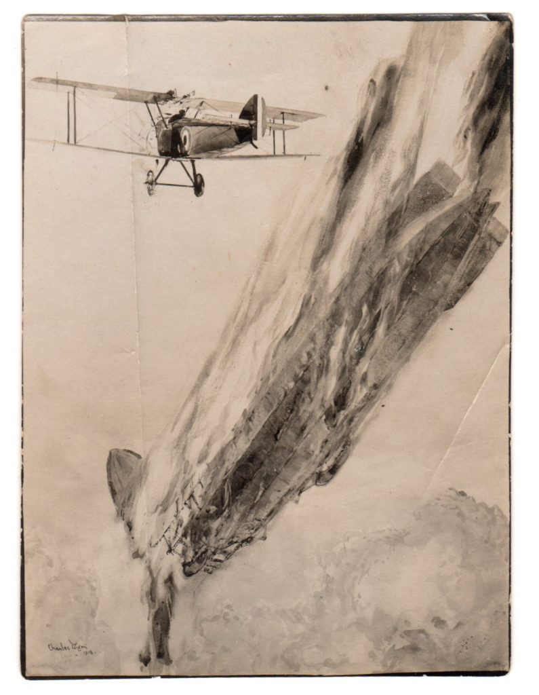
이후 컬리 대위는 어떻게 귀환할 수 있었을까? 설마 그 초소형 항모의 비행 갑판에 착함? 물론 아님. 원래 계획은 그냥 구축함 옆 해면에 불시착하고 조종사는 구축함이 건져내는 것. 물론 카멜 전투기는 그냥 1회용으로 버리는 것. 그런데 제펠린의 고도가 너무 높아 이미 이함한지 1시간이 흐른 뒤였고 당시에는 망망대해에서 어떻게 모함을 찾을 것인지에 대한 항법 훈련도 전혀 없었기 때문에, 컬리 대위는 끝내 구축함을 찾지 못함. 이러다간 바다에 빠져 죽겠다고 겁이 단 컬리는 저 아래 보이는 네덜란드 어선 옆에 그냥 불시착을 결심. 그러나 그러기 위해 고도를 낮추는 과정에 운좋게도 수상기들을 날려보내고 독일 전투기에 쫓겨 달아났던 모터보트들을 발견. 결국 그 옆에 불시착한 뒤 구조됨. 컬리 대위는 제펠린 격추의 공로로 DSO (Distinguised Service Order) 훈장을 받음. 영국 해군은 이후로도 이런 초소형 항모를 이용한 작전을 더 펼치려 했으나 곧 종전이 되는 바람에 무산.
** 레이더 개발 이야기는 한 주 쉬어갑니다. Source : http://bumaritime.org/projects/58ft-towing-lighters/ https://www.usni.org/magazines/proceedings/1960/august/destruction-zeppelin-l53 https://www.secretprojects.co.uk/threads/perhaps-the-smallest-aircraft-carrier-in-the-world.40933/ https://en.wikipedia.org/wiki/Charles_Rumney_Samson https://www.secretprojects.co.uk/threads/perhaps-the-smallest-aircraft-carrier-in-the-world.40933/